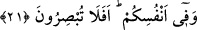

sıfatlar süzülür.
3. Ayrıca yeryüzünde terkedilmiş, imârı mümkün olmayan çorak bölgeler de, bu
tarîkata îmanı olmayan kimseye benzer. Böyleleri ihmâl edilir. Bu tip insanlara bir
şeyler anlatma, çorak toprağa tohum atmak gibidir.
Şeyh-i Ekber (k.s.): “Basîretsiz/verimsiz, kabiliyetsiz araziye buğday ekmeyiniz”
demiştir. Yâni kalp ve rûhun gıdası olan beyân-ı hakikat, bedenin gıdası gibidir. Şeyh-i
Ekber’in zikrettiği “kör arazi”, Hakk’ı göremeyen ve bütün eşyadaki hakikatı müşâhâde
edemeyen kabiliyetsiz ve basîretsiz kimselerin kalbi ve rûhudur.
Sebze ve nebâtâtın yerden çıkması, Allah’ın, varlıklar aynasında yansıyan zât ve
sıfatının tecellîsinin zuhûrudur. Nitekim O’nun tecellîsi Musa (a.s)’a Tûr dağında, Îsâ
(a.s)’a Tarsus ve Sîs civarlarında, Rum denizi sâhilindeki bir şehir olan Misîsâ’da, Hz.
Muhammed (s.a.)’e de Mekke’nin dağlarında zuhûr etmiştir. Rasûlullah (s.a.)’ın şu
hadisine bakmaz mısın: “Allah’ın (dini) Sina’dan gelip kendisinden bir zaman yardım
dilenen (Musa ve kavmine) yardım etti. Sonra da Fârân dağları (Mekke dağları)nda
(güneş gibi) zuhûr etti.”[16]
Kâmus’ta Fârân dağları, Tevrat’ta adı geçen ve Bekr b. Kasım dağının da aralarında
bulunduğu dağ (silsilesi) olarak belirtilmiştir.
21. Kendi nefislerinizde de öyle. Görmüyor musunuz?
Yâni kendi canlarınızda da nice ibretler vardır. Âlemde hiçbir şey yok ki insanın
kendisinde onun bir nüvesi olmasın. Bu da Fussılet sûresinin sonunda bulunduğu üzere
büyük alemin, küçük alem olan insanda tatbik edildiğine delâlet etmektedir. Allah
Fussılet sûresinin sonlarında “Biz onlara, ufuklarda ve kendi canlarında âyetlerimizi
göstereceğiz ki, O (Kur’ân)ın gerçek olduğu, onlara iyice belli olsun.” (Fussilet
41/53) buyurmuştur. Ayrıca Allah Teâlâ sadece insana faydalı keyfiyetler, güzel fiziki
görünüşler, hârika bileşimler, fiillerinin şanının yüceliği, çeşitli şeyleri yapabilme
kudreti ve her tür kemâlâtı kendinde toplama kabiliyeti vermiştir.
Bahru’l-ulûm’da bu hususta şöyle denmiştir: Yeryüzünde hayvan, ağaç, dağ ve
nehirler gibi pek çok çeşit (tevhidî) delâletler bulunduğu gibi, nefislerinizde de onların
yaradılış güzellikleriyle ilgili Allah’ın hikmet, kudret, tedbir ve irâde kemâlâtına işâret
eden ibretler bulunmaktadır. (ve fî enfüsikum) ile başlayan kısım tamimden sonraki tahsisi ifâde eder.
Çünkü insanların nefisleri de ancak yeryüzünden bir bölümdür. Bu âyette sanki şöyle
denmek istenmiştir: Yeryüzünde âkil muvahhidler için ibretler ve özellikle de
nefislerinizde bu (ibretlerin) delilleri vardır. Zira her nefs-i âkil ve ondan teşekkül eden
şeyin bâtın ve zâhirlerinde en yakından gözlenen husus, Sâni-i Teâlâ’ya işâret eden
apaçık delilleri bulunması ve kişinin doğumundan vefatına kadarki süre içinde bunların